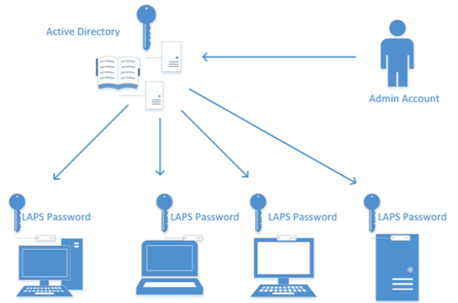

Cyber Security - Password Control
Disclaimer
This detail is provided as guidance only.
Changes made to your Active Directory are made at your own risk.
Test any / all of the concepts presented here on demo accounts / machines first and ensure they are working in the way that you desire before rolling out across your domain.
Software products are presented as suggestions only, and are not endorsements.
Password Policies : High Level
Domain Based
The Default Domain policy includes a good foundation for your minimum password strength settings.
However these are the not the solution if you wish to enhance security on a subset of users, as all users are affected by the settings here.
Fine Grained Password Policies
- Control the level of security applied to users based on their group membership
LAPS (Local Administrator Password Solution)
The perfect tool for enhancing password protection on end user devices
Also ideal for use on member servers (non-DC’s)
Domain Based Password Policies
At a high level, the default domain password policy should be used to set the MINIMUM level of security across your user account base.
Maintain at least an 8-character minimum length requirement
Don’t require too short a time for mandatory periodic password resets for user accounts
Don’t use a single word, eg ‘password’ or a commonly-used phrase like ‘Iloveyou’, or passwords that have been used previously
Educate your users to not re-use their organization passwords for non-work related purposes
Check NCSC for their latest guidance
Fine Grained Password Policies
Fine Grained Policies have been covered by us in many of our sessions, and for a good reason. They are an incredibly good way of allowing multiple levels of password complexity at the same time, for no additional software cost.
Fine-grained password policies give you the ability to force a unique password policy to a specific group of users in your Active Directory.
The main reason to use these policies is to set stronger password policies onto the (ideally RBAC) groups of privileged user accounts without forcing the entire user base to have to conform to the much more stringent requirements of a privileged account.
By using fine grained password policies you enhance your security for the user groups for privileged system access that are likely to be the primary targets which could be compromised in any malicious attack which may occur.
Secure your endpoint Administrator accounts with LAPS
Microsoft’s “Local Administrator Password Solution” (LAPS) provides management of local administrator account passwords for domain-joined computers.

Passwords are randomized and stored in Active Directory (AD), protected by ACLs, so only eligible users can read it or request its reset.
What is LAPS
Microsoft Local Administrator Password Solution (LAPS) is a password manager that utilizes Active Directory to manage and rotate passwords for local Administrator accounts across all of your Windows endpoints.
LAPS is a great mitigation tool against lateral movement and privilege escalation, by forcing all local Administrator accounts to have unique, complex passwords, so an attacker compromising one local Administrator account can’t move laterally to other endpoints and accounts that may share that same password.
A benefit, compared to other password managers, is that LAPS does not require additional computers, or application servers, to manage these passwords.
The management of these passwords is done entirely through Active Directory components.
Benefit of LAPS
Normally you would use a privileged account to access a workstation remotely, but this type of access can protected by using LAPS.
If your privileged account has no direct access or privileges on other machines it can’t be easily exploited if it were hacked. However this does not protect you in all attack types but it definitely adds another layer of protection in your environment.
The configuration is relatively straightforward, and a link to a 3rd party site is listed below, along with the Microsoft download link.
LAPS download link : https://www.microsoft.com/en-us/download/details.aspx?id=46899
LAPS installation guide : https://www.recastsoftware.com/resources/overview-of-microsoft-laps-local-administrator-password-solution/
Password Auditing
Why Audit Passwords ?
Auditing passwords on a regular basis will help identify users who need education on the importance of account security. It will also identify any passwords that have not been changed in a long time.
Auditing passwords examines the security of your network by attempting to break into the network. It tries common attacks on accounts in order to exploit weak passwords.
Password security audits help you test the strength of your users’ passwords and your resiliency against password attacks. Not only can they help you uncover weak passwords, but they also provide an opportunity to educate your employees on proper password utilisation.
Why Audit Password Strength ?
By running a ‘Weak Password’ report the software you choose will generate a detailed list of user accounts with weak domain passwords by comparing them against a list of vulnerable and commonly used passwords. Admins can then force these users to change their passwords the next time they log on.
Using an effective password auditing tool to monitor user password changes and find users who have weak passwords for their corporate accounts is just the first thing that you need to do. The next thing is enforcing the use of strong(er) passwords.
Why passwords need to be secure
Weak passwords are the most dangerous thing for the organisation that a user can have, and yet using a stronger, secure password is the simplest thing to do.
Hackers use a range of measures to gather information, the most common of which is to use social engineering to get information which may well be the link to getting into your accounts.
Most early password reset systems asked questions such as ‘Mother’s maiden name’ or ‘favourite colour’ and the like.
Now think about the last time you saw a post on social media saying something like ‘what was your first car’.
Bingo - you’ve just supplied a key piece of personal information which can be used against you.
Remember This ?

People inherently use passwords they can remember (example: names of pets, partners, kids etc), so if your users insist on using these, they should make them secure with the use of special characters and numbers at the very least - and make sure they are long.
By auditing your user base passwords to uncover weak, unsecure passwords you will reduce your chances of having these accounts compromised by a large percentage.
This can be further secured by implementing Multi Factor Authentication and further again by using Conditional Access Policies where applicable.
Password Auditing Software
There are many Free Options Available, but for an example here is a popular one:
Specops Password Auditor
https://specopssoft.com/product/specops-password-auditor/
Premium Options. Again, many options exist here, a good example of which is:
ManageEngine AD SelfService Plus
https://www.manageengine.com/products/self-service-password/active-directory-password-audit.html
ManageEngine ADAudit Plus
https://www.manageengine.com/products/active-directory-audit
KeyFeature Comparison - Specops v Manage Engine
| Feature | SpecOps Password Auditor | ManageEngine ADSelfService Plus |
|---|---|---|
| Get Password Reports (Weak Passwords) | Yes | Yes |
| AD Account Audit (password vulnerability, admin account detail, stale/inactive accounts) | Yes | Yes |
| Password Self Service | Yes | |
| Password Policy Enforcer | Yes | |
| SSO / Password Synchroniser | Yes |
These are just some highlighted features. We advise that you look at the detailed specifications for any free or premium products that you may be considering
Manage Engine ADSelfService Plus is a subscription product, but is free for up to 50 users.
Contact Manage Engine for a quotation for your organisation as pricing is dependent on user count.
Integration with MFA & CAPS
By integrating a robust password policy, regular audits of password security with Multi Factor Authentication (and where possible, Conditional access policies) you will make your system as secure as possible with current technologies.
Remember to educate users on Social Engineering, and how to be on guard against phishing emails !
Some users may not like MFA being enforced, however there is no reason at all why this cannot be implemented in a user friendly manner - MS Authenticator or Cisco Duo have very intuitive interfaces on their mobile device apps which are speedy and secure.
MFA and Conditional Access are the price we must pay to secure our networks in the modern world of having the ability to work from anywhere at any time.
Multi Factor Authentication : High Level
Multi Factor Authentication works on the principle of requiring more than one of these items:
Something you have (such an authentication application on your phone)
Something you know (such as your username and password)
Something you are (Biometrics such as fingerprint or iris recognition)
For remote system access MFA is usually built up of the first two items, but the authentication applications can also require the third item.

By adding MFA to a complex password you will drastically reduce the chances of the account being compromised !
This can further be reduced by implementing Conditional Access Policies.
Conditional Access Policies : High Level
We have covered Conditional Access Policies (CAP’s) in a few of our other clinics, and they are very useful tools to have in your organisations fight against cyber attacks, and also to relax security requirements in appropriate places.
Popular ones to use for the protection of accounts are :-
Geographical Location - ie if your users are in the UK, ban logins from outside of the UK.
Impossible Travel - if you log in in London at 0900 GMT, and someone tries your credentials in Moscow at 0915 GMT, it will block the login. Site Specific. If you require MFA on your Microsoft 365 logins, why not consider a policy that if you are on your internal LAN for MFA not to be required ?
This should help pacify some of your users who consider MFA to be unnecessary !
The future of authentication
The two main product types that will be at the heart of future authentication are Biometrics and Passwordless Authentication.
Biometrics: By utilising things such as fingerprint or facial recognition, authentication can be granted without typing in a password (and equally importantly) a username
Passwordless: A passwordless approach is not a replacement for passwords, but a complement to them, and more importantly, a critical security improvement.
Currently Passwordless authentication can be delivered via Single Sign On (SSO), Enterprise Password Management and Multi Factor Authentication.
When looking at improving or completely changing the way that you deliver your end user authentication experience it is advised that you review the current NCSC advice.
Summary
Educate Users on why password security is important
Implement a good robust password policy for all domain users
Configure Fine Grained Password Policies to apply stronger passwords for higher privileged accounts
Install Password Auditing Software, regularly conduct scans and remediate issues
Implement Multi Factor Authentication to secure all accounts, especially Cloud based and public facing user accounts
Implement Conditional Access Policies to reduce your attack surface and to give easier access under the correct conditions.
Appendices
Password advice
Use upper- and lowercase letters, special characters, and numbers. Never use only numbers. Such passwords can be cracked quickly.
Misspell words or create acronyms from a quote or a sentence. For example, ASCII is an acronym for American Standard Code for Information Interchange that can also be used as part of a password.
Use punctuation characters to separate words or acronyms.
Change passwords every 6 to 12 months or immediately if they’re suspected of being compromised. Anything more frequent introduces an inconvenience that serves only to create more vulnerabilities.
Use different passwords for each system. This is especially important for network infrastructure hosts, such as servers, firewalls, and routers. It’s okay to use similar passwords — just make them slightly different for each type of system, such as SummerInTheSouth-Win7 for Windows systems and Linux+SummerInTheSouth for Linux systems.
Use variable-length passwords. This trick can throw off attackers because they won’t know the required minimum or maximum length of passwords and must try all password length combinations.
Don’t use common slang words or words that are in a dictionary.
Don’t rely completely on similar-looking characters, such as 3 instead of E, 5 instead of S, or ! instead of 1. Password-cracking programs can check for this.
Don’t reuse the same password within at least four to five password changes.
Use password-protected screen savers. Unlocked screens are a great way for systems to be compromised even if their hard drives are encrypted.
Don’t share passwords. To each his or her own!
Avoid storing user passwords in an unsecured central location, such as an unprotected spreadsheet on a hard drive. This is an invitation for disaster. Use Password Safe or a similar program to store user passwords.
Password Storage Software
There are plenty of password storage products on the market which keep your passwords securely, and you limit access to it with its own level of security. The passwords are not displayed, but you can copy them to use.
Refer to the NCSC guidelines on using these systems:
https://www.ncsc.gov.uk/collection/passwords/password-manager-buyers-guide